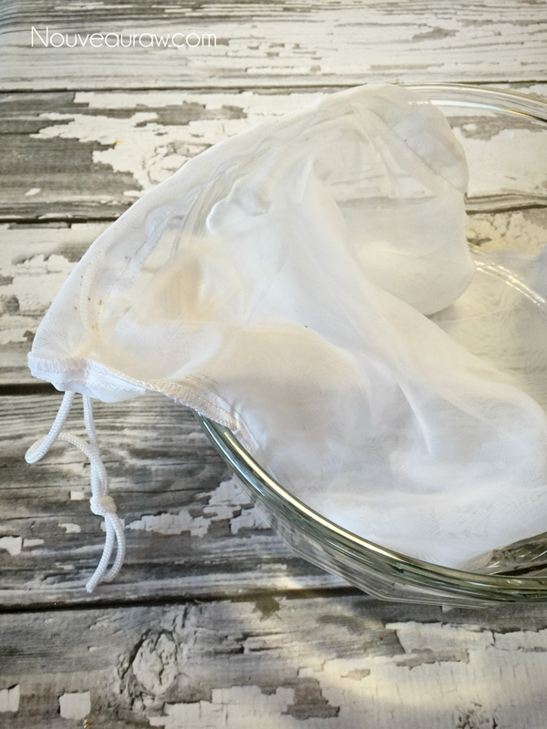
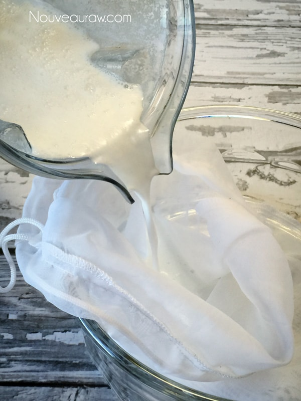
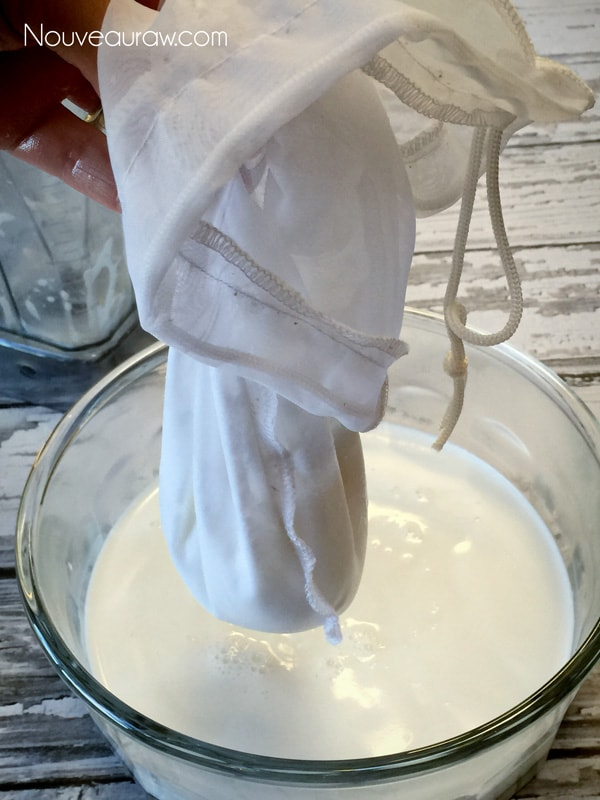
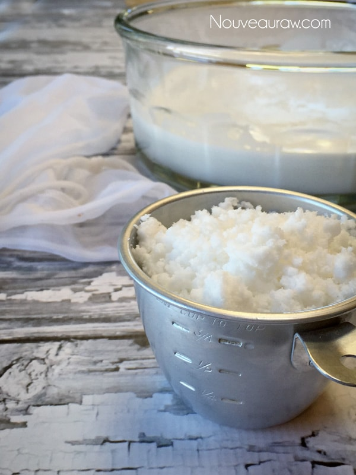
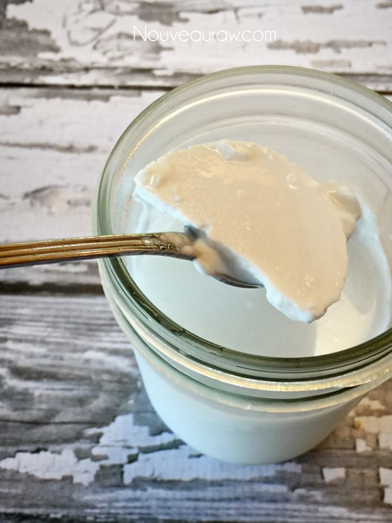

Coconut Milk (using shredded coconut)

~ raw, vegan, gluten-free, nut-free ~
Why do I add sunflower lecithin?
Sunflower lecithin is made up of essential fatty acids and B vitamins. It helps to support the healthy function of the brain, nervous system, and cell membranes. It also lubricates joints; helps break up cholesterol in the body.
It comes in two forms, powder and liquid. For the milk, I prefer using the powdered sunflower lecithin. Setting aside all the nutritional benefits, it is a natural emulsifier that binds the fats from nuts with water creating a creamy consistency.
- 2 cups dried, shredded unsweetened coconut
- 4 cups hot water
- Note: if you only have large flakes of coconut, I recommend that you first grind them in the blender, Bullet, or coffee grinder.
- When using hot water, don’t allow the temperature to go above 115 degrees (F) if you have any concerns about it overheating the coconut.
- If you don’t have a temperature gauge, you can test with your finger. You should be able to hold your finger in the water and not be burned. But be careful using this method just in case you got the water too hot… I don’t want you to get burned. :)
- Place the coconut and water in a blender. Allow it to rest for a few minutes to give the coconut time to soften before continuing onto the next step.
- Blend on high for 2-3 minutes.
- Pour the coconut milk into a nut milk bag or fine mesh strainer.
- Do this by placing the nut bag inside a medium-sized mixing bowl. Pour the coconut mixture into the nut milk bag and squeeze all the liquid out.
- Place the milk in an airtight container and store in the fridge for up to 3-4 days.
- After sitting in the fridge overnight, a thin crust of coconut fat firmed up on top. Replace the lid and shake vigorously.
- You can freeze the milk for up to three months. Once thawed, shake it well to mix it all back together.
- Since there are no preservatives, the “cream” of the coconut milk may separate on the top when stored in the fridge. Just shake or stir before using it.
- Save the coconut pulp and learn how to make flour out of it (here).
Nut bag tip: When using a nut bag, turn it inside out so that the
the seam is on the outside to prevent the pulp from getting all
caught up in the seam, making it harder to clean.

Pour the coconut milk into the bag…

Gather up the fabric and gently squeeze the water out into the bowl.

The bag will contain coconut pulp… click (here) to make flour.

The following day after the coconut milk chilled the fats that had
floated to the top, firmed up. I placed the lid on the jar and shook it
all back together.

© AmieSue.com